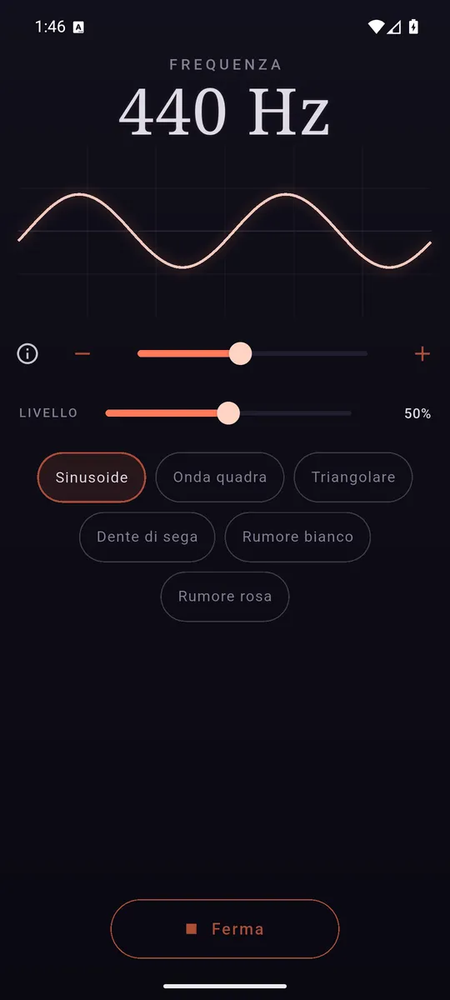
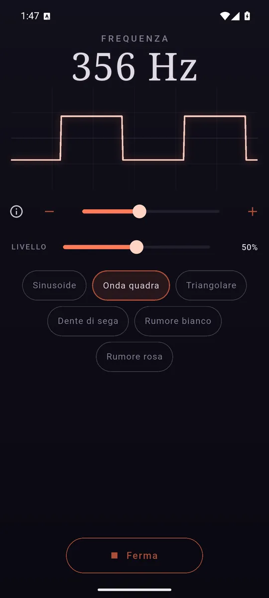
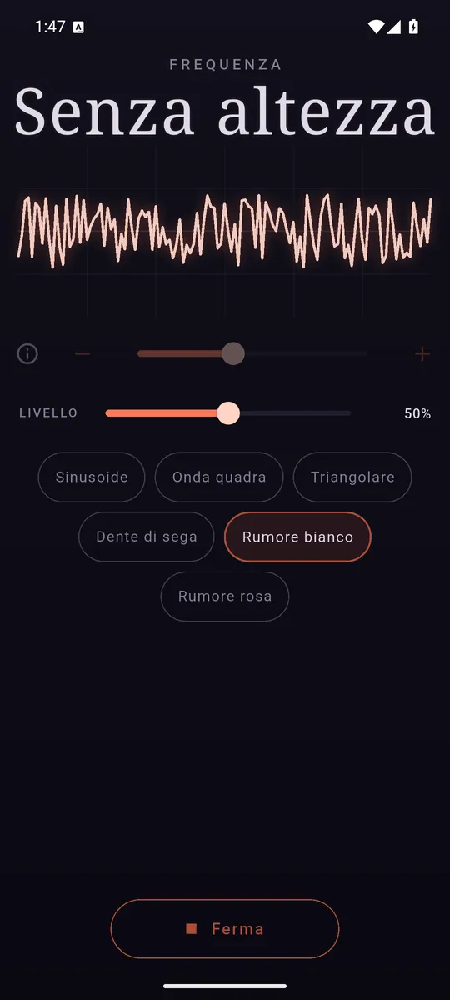

ItalianoEnglish
Six waveforms, from 20 Hz to 20 kHz, and a button to make them sound. The wave is drawn on screen while it plays — the only honest sign that it really is playing.

Pick the frequency and hear the wave as you move it. 
Sine, square, triangle, sawtooth and the two noises. 
White and pink, with no pitch: to sleep, to calibrate, to mask.
What it does
- Six waveforms. Sine, square, triangle, sawtooth, white noise and pink noise.
- Frequency on a logarithmic dial, where an octave takes the same distance low and high — plus two buttons that move by a semitone, because ten hertz is an octave at the bottom of the scale and nothing at the top.
- Level on a decibel taper. The whole travel of the slider is useful, instead of being spent on sounds that all seem equally loud.
- The wave drawn while it plays.
- In English and Italian, following the phone's language.
It opens silent, always
An app that makes a noise the moment it is opened is an app uninstalled the moment it is opened — this one especially, which is often opened in headphones or in a room where somebody is asleep. Sound starts when you ask for it, and never before.
What it is for
Testing a speaker or a pair of headphones, hunting a hum, checking a tuner, masking an annoying noise with pink noise, or finding out where your hearing stops.
One warning worth repeating: a steady tone at a high level in headphones is louder than it seems, because it has none of music's pauses and variation. The app says so when you turn it up.
Your data stays yours
Tone asks for no permissions at all: it listens to nothing, does not know where you are, and has no camera to ask for. There is not even an audio file in the package — every sample is computed on the phone as it plays.
How it is paid for
One banner anchored at the bottom, and that is all: no subscription, no waveform held hostage.
Where to find it
Not on Google Play yet. The link will appear here when it is.